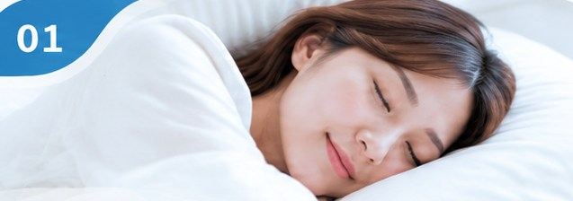
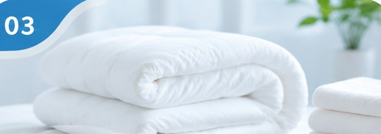
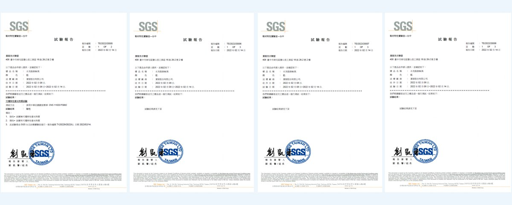
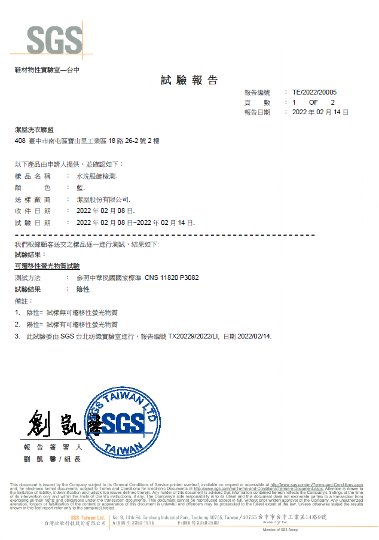
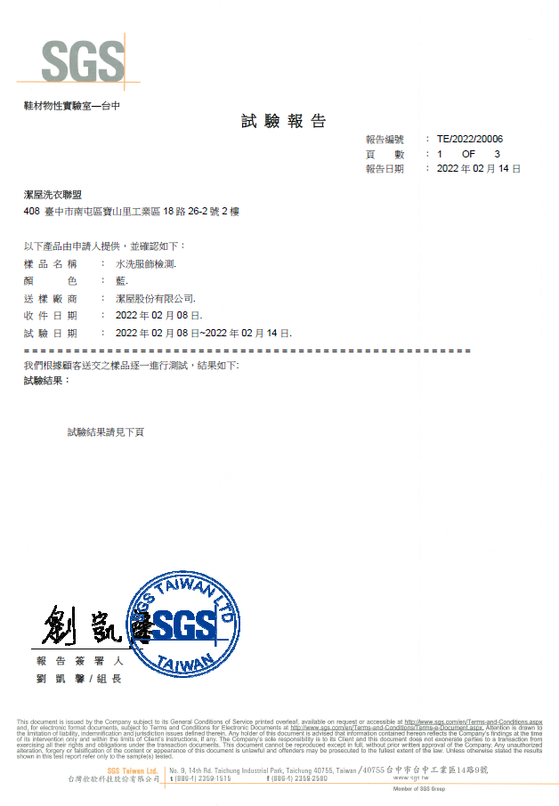
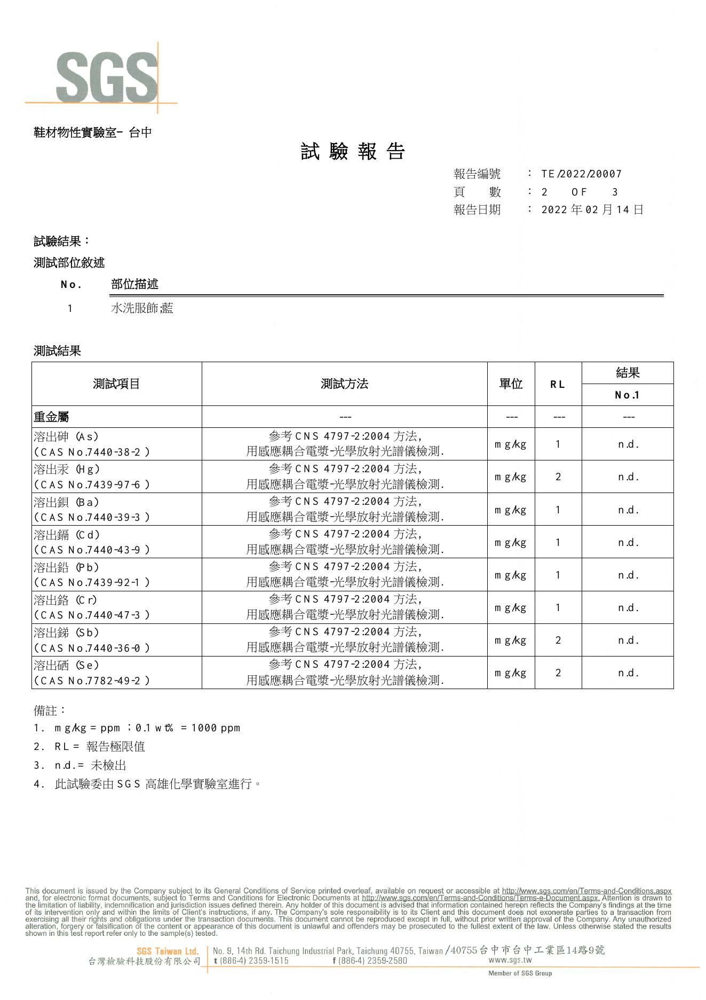
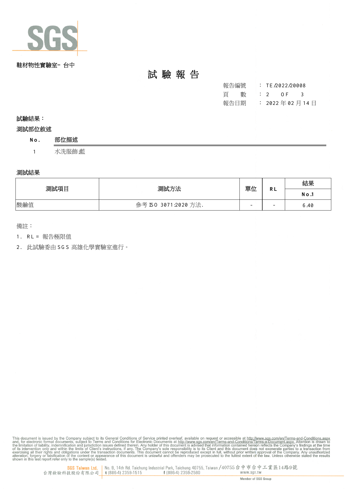

01
長時間貼近肌膚
更重視親膚感受
寢具每天陪伴我們長時間休息。我們不以濃郁香味作為潔淨的唯一標準，而是重視洗後布料的清潔品質與使用感受。
床單、枕套與棉被，長時間貼近我們的肌膚。對潔屋而言，寢具清洗不只是去除髒污，更重視洗後品質與每一道處理環節。

從親膚考量、洗後產品檢測，到晾曬環境，讓每一道環節都有清楚的把關方向。

寢具每天陪伴我們長時間休息。我們不以濃郁香味作為潔淨的唯一標準，而是重視洗後布料的清潔品質與使用感受。

送交 SGS 檢測的是完成水洗程序後的產品，而不只是單一洗劑。重視整體洗滌後的實際檢測結果。
不直接在戶外或騎樓晾曬，減少寢具接觸道路揚塵、汽機車廢氣等外部污染的機會。
潔屋將完成水洗程序後的產品送交 SGS 進行四項檢測，重視完整洗滌流程後的產品檢測結果。
檢測內容與適用範圍以原始 SGS 報告為準；不代表每件寢具均逐件送驗，也不等同所有洗劑及處理劑分別取得認證。
以下為 2022 年 2 月 14 日的 SGS 試驗結果。送驗樣品為水洗服飾（藍色）。



